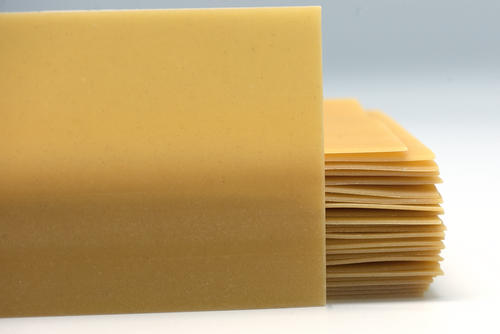

Lasagna

Description
Recipe for Gluten Free Lasagna Dish
Quick and simple midweek meal. Great accompanied with a salad a slice or two of garlic bread.
Ingredients
- Gluten Free Past Sheets
- 500g Mince Meat or Substitute
- 500g Tomato Passata
- Table Spoon of Tomato Paste
- Teaspoon of Salt
- 2 Table Spoons of Sugar
- Favourite Herbs, Spices and Sauces
- Litter of Milk
- Lactose Free Milk if Preferred
- 250g of Preferred Cheese
- Lactose Free Cheese if Preferred
- 50g of Butter
- 50g of Cornflour
Steps
- Fry Mince
- Add Tomato Passata, Paste, Salt, Sugar and Herbs and Spices
- Add 500 ml of Water
- Bring to the boil and simmer until thickened
- Add milk and butter to stove
- Slowly bring to simmer
- Dilute Cornflour in 50ml of Cold Milk
- Slowly Add diluted Cornflour to heated milk and slowly stir threw
- Bring to simmer and ensure milk thickened
- Turn off heat and add cheese to milk
- Stir Cheese threw
- Layer one third of mince in pan
- Add one layer of Lasagna sheets
- Add layer of cheese sauce
- Repeat Process two more
- Cook as per Instructions for Lasagna Sheets